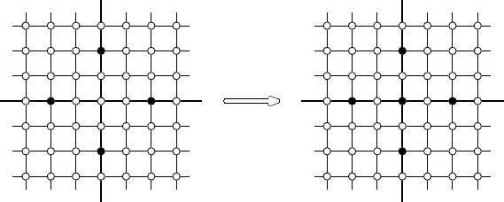

Home Page
F.A.Qs
Statistical Charts
Past Contests
Scheduled Contests
Award Contest
| Online Judge | Problem Set | Authors | Online Contests | User | ||||||
|---|---|---|---|---|---|---|---|---|---|---|
| Web Board Home Page F.A.Qs Statistical Charts | Current Contest Past Contests Scheduled Contests Award Contest | |||||||||
|
Language: Inner Vertices
Description There is an infinite square grid. Some vertices of the grid are black and other vertices are white. A vertex V is called inner if it is both vertical-inner and horizontal-inner. A vertex V is called horizontal-inner if there are two such black vertices in the same row that V is located between them. A vertex V is called vertical-inner if there are two such black vertices in the same column that V is located between them. On each step all white inner vertices became black while the other vertices preserve their colors. The process stops when all the inner vertices are black. Write a program that calculates a number of black vertices after the process stops. Input The first line of the input file contains one integer number n (0 ≤ n ≤ 100 000) — number of black vertices at the beginning. The following n lines contain two integer numbers each — the coordinates of different black vertices. The coordinates do not exceed 109 by their absolute values. Output Output the number of black vertices when the process stops. If the process does not stop, output Sample Input 4 0 2 2 0 -2 0 0 -2 Sample Output 5 Hint  Source Northeastern Europe 2005, Northern Subregion | |||||||||
[Submit] [Go Back] [Status] [Discuss]
All Rights Reserved 2003-2013 Ying Fuchen,Xu Pengcheng,Xie Di
Any problem, Please Contact Administrator